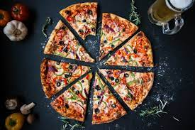

Pizza is the greatest food because it is versatile, delicious and convenient. You can customize your pizza with different toppings, sauces and crusts to suit your preferences and mood. You can enjoy pizza hot or cold, as a snack or a meal, with friends or alone. Pizza is also easy to order, deliver and eat, making it the perfect choice for any occasion. Pizza is more than just food, it is a way of life. 🍕 Another reason why pizza is the greatest food is that it is nutritious, satisfying and affordable. Pizza contains all the major food groups, such as carbohydrates, proteins, fats, vitamins and minerals. You can get a balanced diet from a slice of pizza, especially if you add some vegetables and cheese. Pizza also fills you up quickly and keeps you energized for a long time. Pizza is also relatively cheap compared to other foods, so you can get more value for your money. Pizza is not only tasty, but also healthy and economical. 🍕